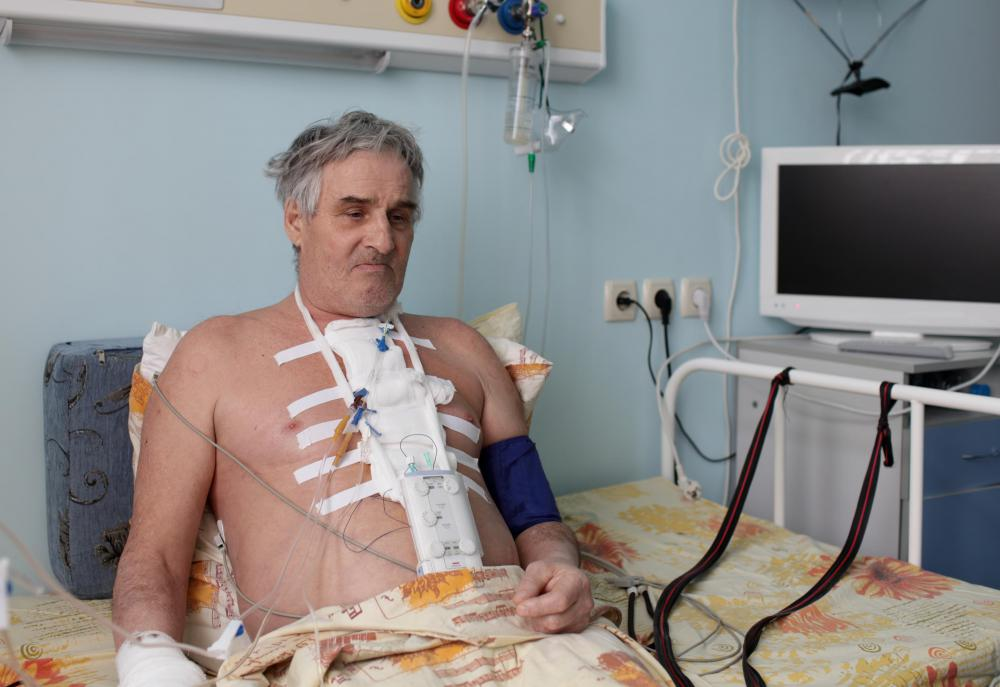

General surgery

Orthopedic surgery

Diagnosis, the process of determining the nature of a disease or disorder and distinguishing it from other possible conditions. The term comes from the Greek gnosis, meaning knowledge. Diagnostics play a crucial role in identifying and diagnosing various medical conditions. Our hospital offers state-of-the-art diagnostic services utilizing advanced technologies such as MRI, CT scan, X-ray, ultrasound, and laboratory testing.
We have a team of experienced radiologists and pathologists who interpret the results and provide accurate diagnoses, enabling appropriate treatment plans for our patients. Diagnostics is an international, peer-reviewed, open access journal on medical diagnosis published semimonthly online by MDPI.
Our hospital is equipped with modern surgical facilities and staffed by skilled surgeons who specialize in various surgical procedures. We offer a wide range of surgical services, including general surgery, orthopedic surgery, neurosurgery, cardiovascular surgery, and more.
With the use of advanced surgical techniques and technologies, we strive to provide safe and effective surgical interventions to improve the health and well-being of our patients. The purpose of surgery varies, but it may be recommended for making or confirming a diagnosis, removing damaged tissue or an obstruction, repairing or repositioning tissues or organs, implanting devices, redirecting blood vessels, or transplanting tissues or organs.
Our hospital has a dedicated emergency department that operates 24/7 to provide immediate medical care for patients in critical condition. Our team of emergency physicians, nurses, and support staff are trained to handle a wide range of medical emergencies. Emergency care is immediate medical or psychiatric care that is available 24 hours a day in an emergency room or department that is either stand-alone, or more often, part of a hospital or medical center.
We are equipped with advanced life-saving equipment and have quick access to other specialties within the hospital to ensure comprehensive emergency care. Our priority is to stabilize patients, provide timely treatment, and coordinate further care as necessary.